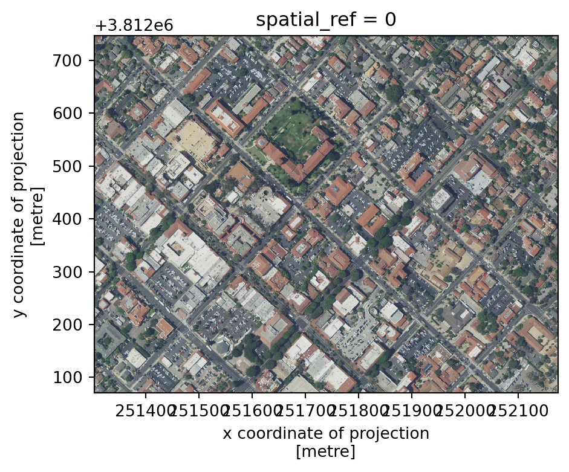
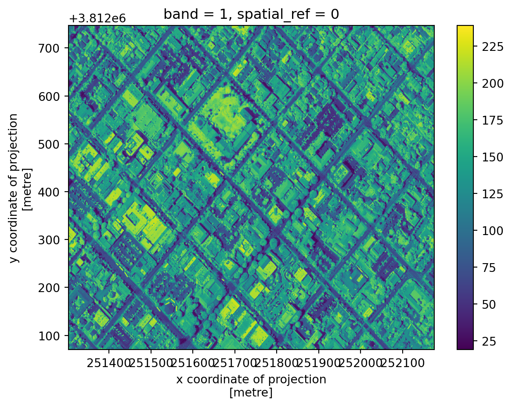
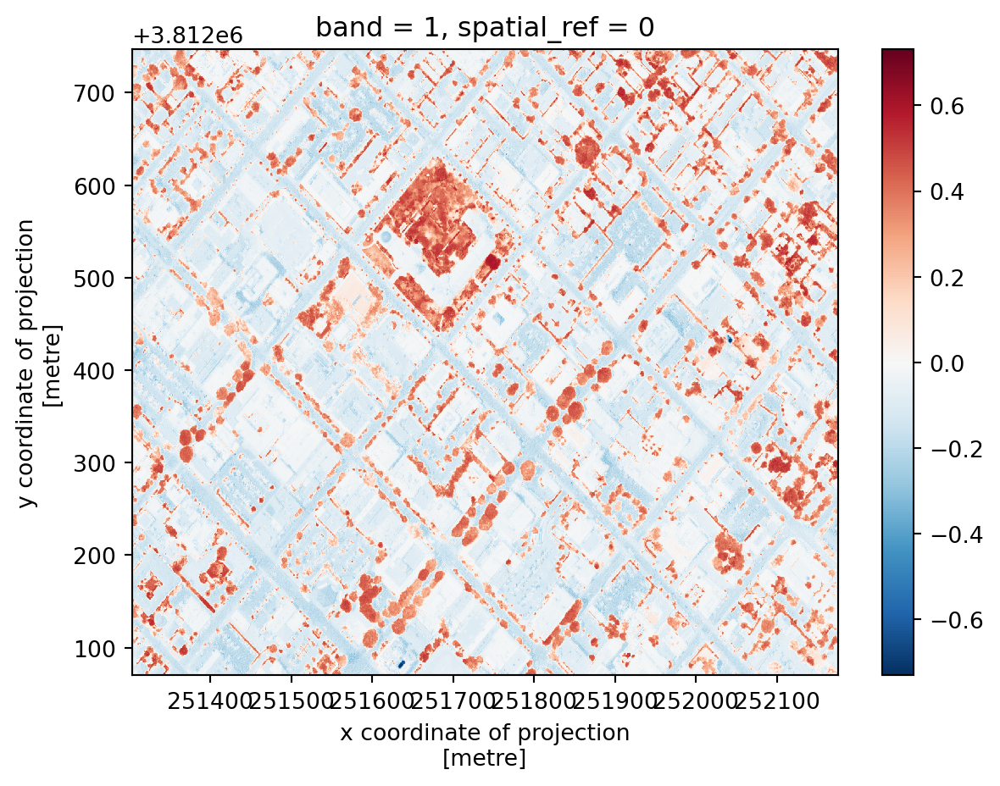

import os
import numpy as np
import matplotlib.pyplot as plt
import rioxarray as rioxr
import geopandas as gpd
from shapely.geometry import Polygon19 rioxarray
In this lesson we will introduce rioxarray, a Python extension for xarray to manipulate xarray.DataArrays as rasters. The name rioxarray stands for raster input/output + xarray. We will use the rioxarray’s rio accessor to obtain raster information from an xarray.DataArray and do some raster manipulations (calculate NDVI).
19.1 Data
The raster files we will use today come from the US National Agriculture Imagery Program (NAIP). NAIP images are are high-resolution aerial images with four spectral bands: Red, Green, Blue and Near-infrared (NIR). The raster’s we’ll use today are from 2020.
For this lesson, I did some pre-processing of the data to separate the RGB bands from the NIR band and clipped a scene. The data was accessed and pre-processed at Microsoft’s Planetary Computer NAIP data repository.
19.2 Import .tif
Let’s start by loading the libraries we’ll use:
There are multiple ways of opening a ‘.tif’ file using xarray or rioxarray. Using the rioxarray.open_rasterio() function to open the ‘.tif’ file is a simple way to make sure all our geospatial data gets loaded correctly:
# load NIR tif file
nir_fp = os.path.join(os.getcwd(),'data','naip','nir.tif')
nir = rioxr.open_rasterio(nir_fp)
nir<xarray.DataArray (band: 1, y: 3208, x: 2419)>
[7760152 values with dtype=uint8]
Coordinates:
* band (band) int64 1
* x (x) float64 2.512e+05 2.512e+05 ... 2.527e+05 2.527e+05
* y (y) float64 3.813e+06 3.813e+06 ... 3.811e+06 3.811e+06
spatial_ref int64 0
Attributes:
AREA_OR_POINT: Area
scale_factor: 1.0
add_offset: 0.019.3 xr.DataArray exploration
First, let’s verify the raster we loaded is an xarray.DataArray:
type(nir)xarray.core.dataarray.DataArrayNotice we see all the components of an xarray.DataArray: its dimensions (band, y, x), the coordiantes for each dimension, and some attributes. We can also directly access some of these attribues:
# print shape and data type
print('shape: ', nir.shape)
print('data type: ', nir.dtype, '\n')shape: (1, 3208, 2419)
data type: uint8
Using the .values attribute we can get a quick view at the values at the corners in our data array.
print(type(nir.values))
nir.values<class 'numpy.ndarray'>array([[[167, 164, 161, ..., 147, 152, 151],
[170, 170, 168, ..., 151, 149, 154],
[176, 177, 177, ..., 151, 151, 151],
...,
[ 94, 88, 101, ..., 83, 88, 79],
[108, 95, 103, ..., 92, 91, 75],
[ 94, 90, 104, ..., 87, 88, 82]]], dtype=uint8)We can also plot our data:
nir.plot()<matplotlib.collections.QuadMesh at 0x7ff05d0c1160>Notice the coordinates on the x and y axes. This map shows the light captured in the near-infrared spectrum by a sensor on a plane. Can you guess where this? If you guessed Santa Barbara downtown, you guessed right!
19.4 rio accessor
An accessor in Python let’s us access a different set of properties of an object. In our case, we use the .rio accessor for xarray.DataArrays to access its raster properties. For example, its number of bands, height, width, spatial bounding box, and CRS:
# check geospatial attributes
print('# bands: ', nir.rio.count)
print('height: ', nir.rio.height)
print('width: ', nir.rio.width, '\n')
print('spatial bounding box: ')
print(nir.rio.bounds(), '\n')
print('CRS: ', nir.rio.crs)# bands: 1
height: 3208
width: 2419
spatial bounding box:
(251218.8, 3811027.2, 252670.19999999998, 3812952.0)
CRS: EPSG:26911
Other accessors
We have used accessors before, for example the .str and .dt accessors in pandas.
19.5 Multi-band raster
Let’s now import the RGB raster:
# open RGB raster
rgb_fp = os.path.join(os.getcwd(),'data','naip','rgb.tif')
rgb = rioxr.open_rasterio(rgb_fp)
rgb<xarray.DataArray (band: 3, y: 3208, x: 2419)>
[23280456 values with dtype=uint8]
Coordinates:
* band (band) int64 1 2 3
* x (x) float64 2.512e+05 2.512e+05 ... 2.527e+05 2.527e+05
* y (y) float64 3.813e+06 3.813e+06 ... 3.811e+06 3.811e+06
spatial_ref int64 0
Attributes:
AREA_OR_POINT: Area
scale_factor: 1.0
add_offset: 0.0Notice this raster has three bands, instead of one. This makes sense because we know these bands correspond tothe Red, Green and Blue bands of the image. We can also check this information by looking directly at the attributes:
print('rgb shape: ', rgb.shape)
print('rgb # bands: ', rgb.rio.count)rgb shape: (3, 3208, 2419)
rgb # bands: 3Let’s check the geospatial data too:
# check geospatial attributes
print('shape: ', rgb.shape)
print('data type: ', rgb.dtype)
print('# bands: ', rgb.rio.count)
print('CRS: ', rgb.rio.crs)
# check if the CRSs of the rasters match
print( rgb.rio.crs == nir.rio.crs)shape: (3, 3208, 2419)
data type: uint8
# bands: 3
CRS: EPSG:26911
TrueOn the last line we checked the nir and rgb rasters have the same ESPG:26911 CRS. This is a projected CRS.
Finally, let’s plot this raster. Since it has three bands, we can plot it as an image using the .plot.imshow() method, which will interpret the three bands of the object as RGB.
# parameters for plotting rasters
size = 6 # height in in of plot height
aspect = rgb.rio.width / rgb.rio.height # ratio of widht/height
# plot three bands as RGB image
rgb.plot.imshow(size=size, aspect=aspect)<matplotlib.image.AxesImage at 0x7ff012f2f820>
19.6 Box for clipping
Our area of interest (aoi) for this lesson is a smaller region that includes only a few blocks around the NCEAS building. An easy way to obtain coordinates for such a region:

- go to https://geojson.io/ website,
- zoom in until you find the NCEAS building in Santa Barbara, it might help to change to ‘Satellite Streets’ view on the bottom left corner,
- click on the rectangle icon on the right-side toolbar and draw a small region around the NCEAS buildng,
- the geoJSON code representing this area will appear in the code box,
- one option is two copy-paste this geoJSON into an empty text file and save such file with the .json extension, we could then read it in using
geopandas - instead, we will create our region of index by just copy-pasting the list of points and storing it as a variable:
# vertices of our aoi box
points = [[-119.70608227128903, 34.426300194372274],
[-119.70608227128903, 34.42041139020533],
[-119.6967885126002, 34.42041139020533],
[-119.6967885126002, 34.426300194372274],
[-119.70608227128903, 34.426300194372274]]We can then create a new geopandas.GeoDataFrame:
# create geodataframe with aoi
aoi = gpd.GeoDataFrame(geometry=[Polygon(points)],
crs='epsg:4326')
aoi| geometry | |
|---|---|
| 0 | POLYGON ((-119.70608 34.42630, -119.70608 34.4... |
Let’s break this down a bit:
- first, we use the
shapely’sPolygon()function to create a polygon from ourpointslist. - in
[Polygon(points)]we put this polygon inside a list so we can form the geometry column of our newgpd.GeoDataFrame - we know all the geoJSON files have CRS equal to EPSG:4326/WGS 84, so we set the the CRS of our new
gpd.GeoDataFrameto this.
19.7 Clip raster
Remember: if two geospatial sets will interact they need to be in the same CRS.
In our case, the aoi gpd.GeoDataFrame does not have the same CRS as the rasters:
# check CRss
print('aoi CRS: ', aoi.crs)
print('nir CRS: ', nir.rio.crs)
print('rgb CRS: ', rgb.rio.crs)aoi CRS: epsg:4326
nir CRS: EPSG:26911
rgb CRS: EPSG:26911So let’s reproject:
# reproject aoi to rgb crs
aoi = aoi.to_crs(rgb.rio.crs)
print('matched crs?', aoi.crs == rgb.rio.crs)
aoi.crsmatched crs? True<Projected CRS: EPSG:26911>
Name: NAD83 / UTM zone 11N
Axis Info [cartesian]:
- [east]: Easting (metre)
- [north]: Northing (metre)
Area of Use:
- undefined
Coordinate Operation:
- name: UTM zone 11N
- method: Transverse Mercator
Datum: North American Datum 1983
- Ellipsoid: GRS 1980
- Prime Meridian: GreenwichAnd plot them together:
# plot aoi outline and RGB raster together
fig, ax = plt.subplots()
fig.set_size_inches((size, size*aspect)) # reuse size and aspect
rgb.plot.imshow(ax=ax)
aoi.plot(ax=ax, alpha=0.6)<Axes: title={'center': 'spatial_ref = 0'}, xlabel='x', ylabel='y'>To clip the raster using the aoi polygon we use the .rio.clip_box() method:
# clip rasters to aoi
rgb_small = rgb.rio.clip_box(*aoi.total_bounds)
nir_small = nir.rio.clip_box(*aoi.total_bounds)Notice a few things: - we had to use the .rio accessor to access the clip_box() method - similarly to the shapely.box() function we’ve used previously, .rio.clip_box() usual parameters are minx, miny, maxx, maxy. We are using the * asterisk as an unpacking operator to get these from the list aoi.total_bounds.
Let’s check our clipped data:
# check shape updates
print('original shape: ', rgb.shape)
print('reduced shape: ', rgb_small.shape)
# plot with correct sizes
size = 4
aspect = rgb_small.rio.width/ rgb_small.rio.height
rgb_small.plot.imshow(size=size, aspect=aspect)original shape: (3, 3208, 2419)
reduced shape: (3, 1127, 1454)<matplotlib.image.AxesImage at 0x7ff0130a8610>
# check shape updates
print('original shape: ', nir.shape)
print('reduced shape: ', nir_small.shape)
nir_small.plot()original shape: (1, 3208, 2419)
reduced shape: (1, 1127, 1454)<matplotlib.collections.QuadMesh at 0x7ff0132b8820>
19.8 Compute NDVI
We often want to combine values of and perform calculations on rasters to create a new output raster. In our case, we are interested in computing the Normalized Difference Vegetation Index (NDVI) over our area of interest. The NDVI is an index commonly used to check if an area has live green vegetation or not.
According to the Earth Observing System > The results of the NDVI calculation range from -1 to 1. Negative values correspond to areas with water surfaces, manmade structures, rocks, clouds, snow; bare soil usually falls within 0.1-0.2 range; and plants will always have positive values between 0.2 and 1. Healthy, dense vegetation canopy should be above 0.5, and sparse vegetation will most likely fall within 0.2 to 0.5.
The NDVI is calculated using the NIR and red bands. The formula is
\(NDVI = \frac{NIR - Red}{NIR + Red}.\)
First, we need to select the red band:
red = rgb_small.sel(band=1)
red<xarray.DataArray (y: 1127, x: 1454)>
[1638658 values with dtype=uint8]
Coordinates:
band int64 1
* x (x) float64 2.513e+05 2.513e+05 ... 2.522e+05 2.522e+05
* y (y) float64 3.813e+06 3.813e+06 ... 3.812e+06 3.812e+06
spatial_ref int64 0
Attributes:
AREA_OR_POINT: Area
scale_factor: 1.0
add_offset: 0.0To be able to perform the calculation successfully, we will need to udpate the data type of our rasters:
red16 = red.astype('int16')
nir16 = nir_small.astype('int16')
print('RED: original dtype:', rgb_small.dtype, '.... converted dtype:', red16.dtype)
print('NIR: original dtype:', nir.dtype, '.... converted dtype:', nir16.dtype)RED: original dtype: uint8 .... converted dtype: int16
NIR: original dtype: uint8 .... converted dtype: int16We can perform raster calculations using the same arithmetic we use for np.arrays (because, underneath it all, they are). So our NDVI calculation is as follows:
# calculate and plot NDVI
ndvi = (nir16 - red16)/(nir16+red16)
ndvi.plot()<matplotlib.collections.QuadMesh at 0x7ff01395fe50>
Remember that plants will always have positive NDVI values between 0.2 and 1. Can you spot the Courthouse?
Why change the data type?
The uint8 (8-bit unsigned integer) is a very small data type that only holds integers from 0 up to 255. In particular, calculations don’t return what what we are used to when working with intgers (they’re done module 256):
np.uint8(150) + np.uint8(150)/var/folders/gm/chd1kps96_g7xdxyfw150wm80000gp/T/ipykernel_22838/1890984988.py:1: RuntimeWarning: overflow encountered in scalar add
np.uint8(150) + np.uint8(150)44In the NDVI formula we have to add NIR + Red. If both NIR and Red are very close to 255, when we add them, the calculation overflows the uint8 data type and we don’t get the expected results:
x = (nir - red)/(nir + red)
x.plot()<matplotlib.collections.QuadMesh at 0x7ff0514f0d00>This is why we need to manually convert both rasters into int16, which will be big enough to hold all the numbers that appear in the calculations.
Notice too, that when we performed the NDVI calculation we did not get any warning, although we were overflowing the computation at every cell of our array. This is can be an example of failing silently, where we don’t get any warnings about the errors in our computation. That’s why it’s so important to double-check our results!